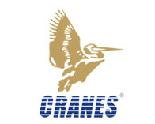

Red Hat training and certification. RHA also helps Students to reach their academic and career potential by training them on RedHat OS.Red Hat Academy Trainers have and will be training Techno NJR Students for 2 Red Had Certifications, Introduction to Containers, Kubernetes, and Red Hat OpenShift and Red Hat Certified System Administrator which are very well known certifications in Industry.
Centre for Development of Advanced Computing (C-DAC) is the premier R&D organization of the Department of Electronics and Information Technology (DeitY), Ministry of Communications & Information Technology (MCIT) for carrying out R&D in IT, Electronics and associated areas.Techno NJR has signed an MOU with C-DAC, Pune for providing high-end training of Computer Science and IT students in various domains like C, C++, Java, Software Testing and others.56 students of CS and IT branch have undergone 3 months certification programme in Software Testing with C-DAC, Pune.
Techno India NJR is an Authorized Training Partner with SAP India Education. The SAP Training Program enables fresh graduates to be SAP certified consultant and equipped with a fundamental understanding of SAP and its various modules. Techno NJR is conducting SAP ABAP course leading to certification.Till now, 25 students have become for SAP Certified International Professionals and have been placed in SAP-based companies like Capgemini, Yash Technologies, Diligent Consulting.
Techno India NJR is a member of Oracle Academy since 2011 Every year, more than 50 students get certified in Java (OCJP) and in Oracle Database (OCA). This year also, 50 students got certified in Oracle Certified Professional, Java SE 6 Programmer (OCJP) certification examination. Oracle Trainings and certifications help in benchmarking students and bridging the gap between industry and academia. Also, it helps student a lot for building a successful career in IT and getting placed with good company.
Techno India NJR is a Registered Education Provider of IEEE Computer Society and offers Software Engineering Body of Knowledge Certificate (SWEBOK) Certificate, Certified Software Development Associate (CSDA) and Certified Software Development Professional (CSDP) training and certification program.IEEE is the world’s largest professional association dedicated to advancing technological innovation and excellence for the benefit of humanity. IEEE and its members inspire a global community through IEEE’s highly cited publications, conferences, technology standards, and professional and educational activities.SWEBOK Certificate Program consists of four modules: Software Foundations, Software Development, Software Lifecycle Management and Software Professional Practice. 80 students of CSE and IT have completed SCP certifications.
Electronics and Communication Engineering
Cranes Software International Limited a company with global presence provides Enterprise Statistical and Engineering Simulation Software Products and solutions worldwide. Techno NJR ECE and EEE students add Industry skills and application-oriented knowledge to their engineering education through Cranes Varsity, the education branch of Cranes Software. In depth technical knowledge as per current industry trends is provided by experts with experience of 10-15 years. Some of the best known experts of Bangalore educate the students in acquiring industry design skills and prepare them for core companies.
More than 100 Techno NJR students of ECE branch have been trained by Cranes by undergoing in depth modules on C, C++, GPOS, ARM, Model Based Embedded Design and RTOS. Hands on MATLAB based designs and ARM based projects carried out in industry style has made many Techno NJR students team members of companies like Verifone, Tata Elxi, Thought Focus and more.
A PG Diploma in Embedded Systems tracking in parallel with B. Tech. Degree is a coherent gain for Techno NJR ECE and EEE students going through process of Cranes Varsity during graduation and renders them more suitable for wide range of high tech Embedded Systems industries worldwide.
Rockwell Automation is world’s leading company dedicated to industrial automation and information. Throughout the world, Allen-Bradley® and Rockwell Software® product brands are recognized for innovation and excellence.
Rockwell Automation Training Services has been accredited as an Authorized Provider by the International Association for Continuing Education and Training. Techno NJR has signed an agreement with Rockwell for providing comprehensive training to its students in the area of automation. More than 100 students have undergone Rockwell training resulting in rewarding jobs in many industries using Rockwell automation products. Techno NJR has also set up a PLC automation Lab with Rockwell and Siemen’s PLC’s and software where students practice and do projects.
Mechanical branch students undergo 6 months of training at Indo German Tool Room (IGTR) at Ahmedabad leading to Certificate of Master of CAD and CAM Technology. More than 50 students of 2014 and 2015 batch students have undergone this training under a tie up between Techno NJR and IGTR. IGTR is one of the finest training facilities for computer numerical controlled (CNC) tool and die making, machining and manufacturing, and modern production technology. Here students undergo hands on training on softwares, simulation tools and industrial CNC machines. The tools and softwares include: SIEMEN and HASS Simulators, MTS Software, Master CAM, CNC lathe and CNC milling, AutoCAD, CATIA, ProE and ANSYS. IGTR also has full-fledged Industrial Production Center where students work on industrial consultancy and machining projects.
Techno NJR Mechanical students have an option of specialising in Rubber Technology through a tie up between Techno NJR , Hari Shankar Singhania Elastomer and Tyre research Institute (HASETRI) and Indian Rubber Institute ( IRI) . Under this arrangement Students study rubber technology course concurrently with their B.Tech degree and appear in an exam conducted by IIT Kharagpur’s Rubber Technology Center leading to PG Diploma of India Rubber Institute (PGDIRI). This enables student enter Tyre and rubber industry for a rewarding job. 21 Mechanical Engineering students of 2015 batch are enrolled for PGDIRI exam in this session.
With Indian economy integrating with world economy, it has become important to expose both faculty and students to University and education systems abroad. Techno NJR has tied up with following Universities.
San Jose State University, USA: Techno NJR has tie up with SJSU for faculty and student exchange program. One faculty member of Techno India NJR has spent a semester at SJSU as visiting faculty member.
iCarnegie: Techno NJR is iCarnegie partner for conducting iCarnegie designed courses for its students. The iCarnegie Software Development Program, powered by the world-renowned Carnegie Mellon University, is designed to provide students with the tools and skills needed to successfully enter the work place and immediately begin adding value to an organization.
Sheffield Hallam University, UK: It is the fourth largest University in the UK. Techno NJR has tie up with SHU for faculty exchange, twinning program for students to get B. Engg. from SHU, and summer training for students. Many students of Techno NJR had summer training at SHU.
IEEE Registered Education Provider: Techno NJR is one of the five Registered Education Provider of IEEE in India to offer Software Engineering Body of Knowledge Certificate (SWEBOK) Certificate, Certified Software Development Associate (CSDA) and Certified Software Development Professional (CSDP) training and certification program.
Techno NJR has introduced it’s well equipped research center for students and faculty members of all branches in the heart of the city (Madhuban). The center has very advanced level instruments and boards from Malaysia, Australia & USA with all the resources to make students learn about precision and automated measurements. The center is used by the students extensively for expert lectures, industry oriented training and working on advanced instrumentation. Students often work midnight to overnight to get an industrial approach in their learning. The center also has facility for research in planar RF and Microwave circuits and have extension planning to open Nanotechnology lab in next 2 years.
Techno NJR selected for Aricent Employability Programme
India has highest number of engineering graduates and the industry currently employs about 2.5 million every year. The industry might employ more than 5.5 million and its size will reach $225 billion by the end of 2020. So there is need to skill students and this new initiative will impact tier-2 and tier-3 cities. Techno India NJR is one of the few colleges chosen by Aricent and NASSCOM for this unique program. Around 2500 college students are expected to benefit from this upskilling exercise, which will be delivered through vocational training providers and governed by the NASSCOM Foundation. This on-campus programme will equip students, in select cities and colleges, with skills in specialised areas, such as JAVA, testing and software development, among others, enabling them to find employment across the IT-BPM industry. The candidates will be assessed on the NDSC-SSC NASSCOM Qualification Parameters (QP) and certified on the relevant job role, enhancing the chances of employment.